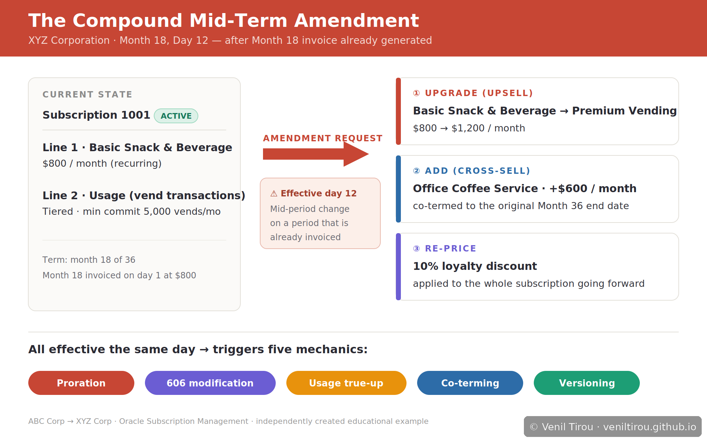
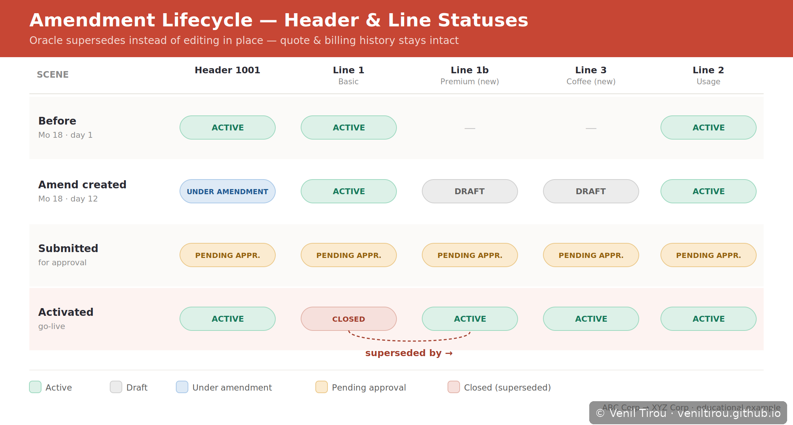
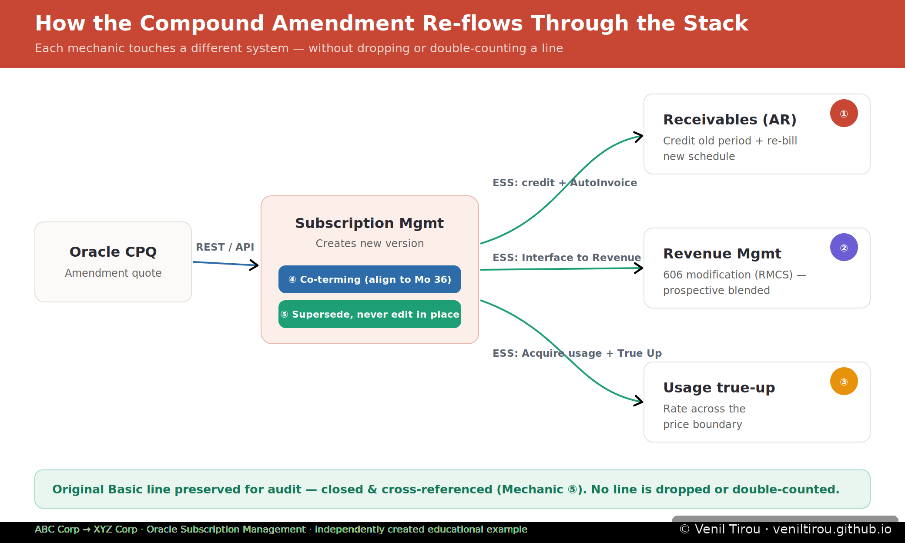

The Compound Mid-Term Amendment
When an upgrade, a cross-sell and a price change all land mid-period — on a term that has already been invoiced. Most amendment examples, including Storyboard 5 in Chapter 2: Subscription Management, show a clean change: a new line added at the start of a period, approved, activated. Real implementations rarely break there. They break when several changes hit at once, mid-period, after the period has already been billed. This page walks that scenario at the data level, on the same XYZ Corporation vending account.
📱 On mobile? Pinch to zoom on any diagram to read the tables and labels clearly.

Current State
| Item | Product | Charge | Status |
|---|---|---|---|
| Subscription 1001 | (header) | — | ACTIVE (month 18 of 36) |
| Line 1 | Basic Snack & Beverage | $800 / month recurring | ACTIVE |
| Line 2 | Usage — vend transactions | Tiered, min commit 5,000 vends/mo | ACTIVE |
1Proration on an already-billed period
Month 18 was invoiced on day 1 at the old rate ($800). The amendment is effective day 12, so the 30-day period splits:
| Span | Days | Rate basis | Action |
|---|---|---|---|
| Day 1–11 | 11 | Basic $800/mo | Already billed — keep |
| Day 12–30 | 19 | Premium $1,200/mo (less 10%) | Credit unused Basic portion, re-bill at new rate |
The billing schedule regenerates from the effective date forward. To credit the already-invoiced portion, Subscription Management needs the original invoice details back from Receivables first (the Fetch Subscription Invoice Information from Receivables job) — you cannot credit an invoice you have not yet synced back.
2Revenue recognition — this is a contract modification (ASC 606)
A mid-term change to scope and price is not just a billing event — under ASC 606 it is a contract modification, and Revenue Management (RMCS) has to decide how to treat it:
| Treatment | When it applies | Effect |
|---|---|---|
| Prospective (new POB) | Added goods/services are distinct and priced at standalone selling price | Remaining revenue spread over remaining term; no catch-up |
| Prospective (blended) | Distinct, but not at standalone price (our 10% discount) | Remaining + new consideration re-spread prospectively |
| Cumulative catch-up | Change is not distinct from what is already delivered | True-up booked in the current period |
For XYZ: Office Coffee is distinct (prospective), but the 10% discount means it is not at standalone price → prospective blended re-allocation across the remaining 18 months. The amendment feeds RMCS via Interface Subscriptions to Revenue Management, which re-derives the performance obligations.
3Usage true-up against a price that changed mid-period
Line 2 is usage-based with a 5,000-vend minimum commit. At day 12, actual usage for Month 18 is not yet final, so the true-up has to reconcile estimated-vs-actual usage across a price boundary — part of the month at the old rate, part at the new.
| Step | Job | What happens |
|---|---|---|
| 1 | Acquire Subscription Usage Data from an External Web Service | Pull actual vend counts |
| 2 | Fetch Pricing Information for Subscriptions and Generate Billing Schedule | Re-rate usage against the correct rate per span |
| 3 | True Up Usage Bill Lines | Settle estimated vs actual; apply min-commit if actual < 5,000 |
4Co-terming the new line
Office Coffee is added in Month 18 but must end at the original Month-36 date — an 18-month line, not 36. Its billing schedule and TCV must align to the existing end date.
| Line | Start | End | Term | Monthly |
|---|---|---|---|---|
| Premium (was Basic) | Mo 18 d12 | Mo 36 | ~17.6 mo | $1,200 −10% = $1,080 |
| Office Coffee (new) | Mo 18 d12 | Mo 36 | ~17.6 mo | $600 −10% = $540 |
5Versioning — supersede, never edit in place
As Storyboard 5 establishes (see Chapter 2: Subscription Management), Oracle does not edit a line in place — it supersedes and cross-references so quoting and billing history stay intact and auditable. The compound amendment at the data level:

How it re-flows through the stack
Every mechanic above touches a different system. The amendment must re-flow without dropping or double-counting a line:
